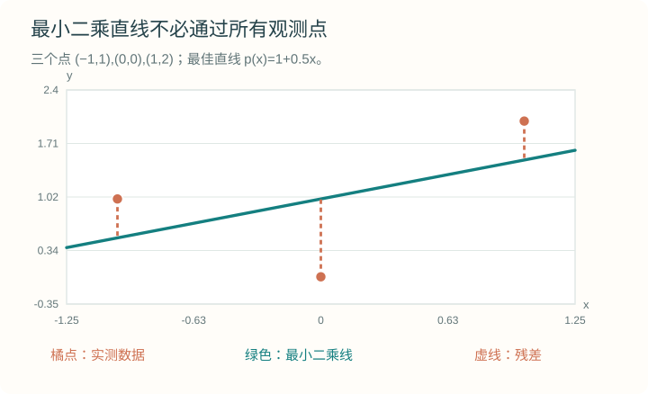
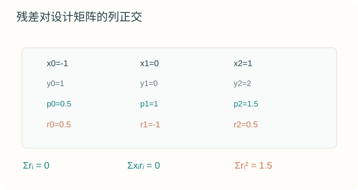
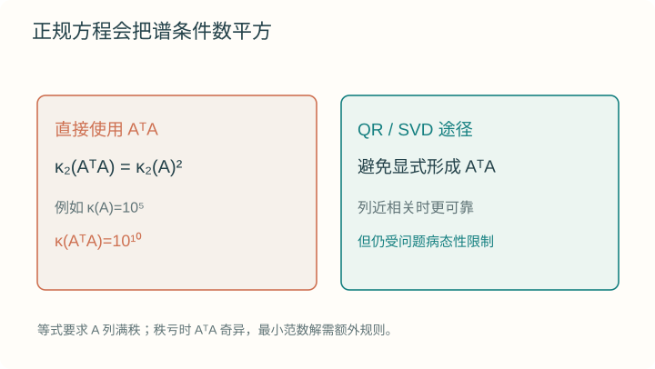

CHAPTER 09 · NUMERICAL ANALYSIS
最小二乘拟合：残差几何、QR 与病态性
给定不共线的观测数据，如何在指定模型类中找到最小平方误差的解？从矩阵投影走到 QR/SVD，并拆解正规方程的条件数平方陷阱。
01 · 三个不共线的点，为什么不该强迫一条线穿过所有点？
测量数据 (−1,1),(0,0),(1,2) 无法由一条直线同时精确通过。如果再增加多项式次数，当然可以用二次函数穿过三个点，但这可能是在拟合测量噪声，而不是恢复真实关系。更稳妥的做法是选择一个模型类（例如直线），再最小化各观测的平方残差。
令预测函数为 p(x)=a+bx。平方残差总和达到最小时，得到 a=1,b=0.5，预测分别为 (0.5,1,1.5)，残差依次为 (0.5,−1,0.5)。它不是精确通过所有点，却是这三个点和该模型类下的唯一最优解。

02 · 从残差平方和到矩阵方程
假设有 m 条观测和 n 个模型系数。令设计矩阵 A∈ℝ^{m×n} 的第 i 行为各基函数在第 i 个样本处的值；观测向量为 y∈ℝ^m，系数向量为 c∈ℝ^n。当 m>n 时通常无法精确解出 Ac=y，转而考虑：
对 c 求导，在列满秩时，必要且充分的最优性条件是 Aᵀ(Ac−y)=0，即残差向量与设计矩阵的每一列正交。这和连续平方逼近中“残差正交于函数子空间”的原理一致，只是内积变成向量点积。

03 · 正规方程为什么不应成为默认数值实现？
正规方程在数学上简洁，但显式计算 AᵀA 往往把数值问题变得更敏感。如果 A 列满秩，则对二范数条件数有以下严格关系：
例如 κ₂(A)=10⁵ 时，κ₂(AᵀA)=10¹⁰。因此，用显式正规方程求系数通常会面临更大的舍入误差风险；QR 分解避免了直接形成这个平方条件数的矩阵。遇到列近相关或秩亏问题时，带主元的 QR 或 SVD 往往更稳健。

若矩阵列不满秩，系数未必唯一；numpy.linalg.lstsq 在其秩判断语义下会返回一种最小范数解。一个几乎秩亏的矩阵也需要清晰的相对阈值，不能只依据是否抛异常判断结果可信。
04 · 对三个观测值逐步验证拟合结果
对样本 x=[−1,0,1] 和 y=[1,0,2]，设计矩阵的列是常数向量 (1,1,1) 与位置向量 (−1,0,1)。它们恰好正交，因此 AᵀA=diag(3,2)、Aᵀy=(3,1)，解得截距 1、斜率 1/2。对单变量带截距的最小二乘模型（且横坐标并非全部相同），斜率还可以用去均值的协方差与方差之比表达：
模型不能消除全部残差，平方残差和是 1/4+1+1/4=3/2。如果只把中间测量值从 0 调整为 1，三个点的最佳直线仍有斜率 1/2，截距却变成 4/3。这反映了对称采样下常数方向与斜率方向的解耦。
05 · 复现与工程选型：优先 QR/SVD
# 可选依赖：pip install numpy
import numpy as np
x=np.array([-1.,0.,1.])
y=np.array([1.,0.,2.])
A=np.column_stack([np.ones_like(x),x])
coef,residuals,rank,singular=np.linalg.lstsq(A,y,rcond=None)
assert rank==2
assert np.allclose(coef,[1.,.5])
r=y-A@coef
assert np.allclose(A.T@r,[0.,0.],atol=1e-12)
assert np.isclose(r@r,1.5)
print(coef,r,r@r)实际项目中还应先进行输入尺度归一化，并区分预测精度、训练误差和参数可辨识性。如果高次多项式拟合在远离样本区间的地方严重振荡，即使训练残差很小也不能解释为外推准确。
原始资料与延伸阅读
本节参考以下权威资料，并将文献中的数学结论与本文独立构造的示例严格区分。
- NumPy · numpy.linalg.lstsq：求解超定或秩亏系统，返回最小范数解和奇异值相关信息。
- LAPACK · DGELSY：列主元 QR 分解和最小范数线性最小二乘计算。